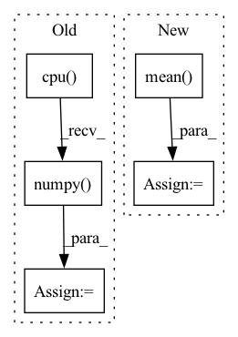

Pattern ID :8353

Before Change
def calculate_activation_statistics(self, samples):
with torch.no_grad():
features = self.model_InceptionV3(samples)[0]
features_np = features.squeeze(3).squeeze(2).cpu().numpy()
mu = np.mean(features_np, axis=0)
sigma = np.cov(features_np, rowvar=False)
return mu, sigma
After Change
features = self.inception_v3(samples)[0]
features = rearrange(features, "... 1 1 -> ...")
mu = torch.mean(features, dim = 0).cpu()
sigma = torch.cov(features).cpu()
return mu, sigma
In pattern: SUPERPATTERN
Frequency: 5
Non-data size: 5
Instances
Fragment ID: 29225613
Project Name: lucidrains/denoising-diffusion-pytorch
Commit Name: 64061aff4006b80c20f34dc2f5508326750fc1b4
Time: 2023-03-02
Author: lucidrains@gmail.com
File Name: denoising_diffusion_pytorch/denoising_diffusion_pytorch.py
M Class Name: Trainer
N Class Name: Trainer
M Method Name: calculate_activation_statistics(2)
N Method Name: calculate_activation_statistics(2)
M Parent Class: object
N Parent Class: object
M File Name: denoising_diffusion_pytorch/denoising_diffusion_pytorch.py
N File Name: denoising_diffusion_pytorch/denoising_diffusion_pytorch.py
M Start Line: 915
M End Line: 921
N Start Line: 931
N End Line: 935
'>
Before Change
_, predicted = torch.max(outputs.data, 1)
for j in range(len(labels)):
cate_i = labels[j].cpu().numpy()
pre_i = predicted[j].cpu().numpy()
conf_mat[cate_i, pre_i] += 1.
if cate_i != pre_i:
path_error.append((cate_i, pre_i, path_imgs[j])) // 记录错误样本的信息
After Change
loss_mean = np.mean(loss_list)
acc_batch_list.append((1 - np.abs(outputs.cpu().detach().numpy() - labels.cpu().detach().numpy())))
ocean_acc = np.concatenate(acc_batch_list, axis=0).mean(axis=0)
acc_avg = ocean_acc.mean()
return loss_mean, ocean_acc, acc_avg
'>
Fragment ID: 29225628
Project Name: liaorongfan/deeppersonality
Commit Name: 565a883600a2f9be36416c98383ef54294da8ab1
Time: 2021-05-23
Author: 15670381505@163.com
File Name: dpcv/engine/portrait_model_trainer.py
M Class Name: ModelTrainer
N Class Name: ModelTrainer
M Method Name: valid(4)
N Method Name: valid(4)
M Parent Class: object
N Parent Class: object
M File Name: dpcv/engine/portrait_model_trainer.py
N File Name: dpcv/engine/portrait_model_trainer.py
M Start Line: 60
M End Line: 87
N Start Line: 54
N End Line: 71
'>
Before Change
// Only reconstruct the Y channel image data.
with torch.no_grad():
sr_tensor_y = model(lr_tensor_y).clamp_(0., 1.)
sr_image_y = sr_tensor_y.mul(255.0).cpu().numpy().squeeze(0).squeeze(0)
sr_image = np.array([sr_image_y, lr_ycbcr[..., 1], lr_ycbcr[..., 2]]).transpose([1, 2, 0])
sr_image = np.clip(imgproc.convert_ycbcr_to_rgb(sr_image), 0.0, 255.0).astype(np.uint8)
sr_image = Image.fromarray(sr_image)
After Change
sr_tensor_y = model(lr_tensor_y).clamp_(0.0, 1.0)
// Cal PSNR
total_psnr += 10. * torch.log10(1. / torch.mean((sr_tensor_y - lr_tensor_y) ** 2))
sr_image_y = sr_tensor_y.mul_(255.0).cpu().squeeze_(0).squeeze_(0).numpy()
sr_image = np.array([sr_image_y, lr_ycbcr[..., 1], lr_ycbcr[..., 2]]).transpose([1, 2, 0])
'>
Fragment ID: 29225624
Project Name: lornatang/srcnn-pytorch
Commit Name: b957357cc1bbc6e96762df844df48a3e6464fd90
Time: 2021-11-05
Author: liuchangyu1111@gmail.com
File Name: validate.py
M Class Name: AnonimousClass
N Class Name: AnonimousClass
M Method Name: main(0)
N Method Name: main(0)
M Parent Class:
N Parent Class:
M File Name: validate.py
N File Name: validate.py
M Start Line: 177
M End Line: 221
N Start Line: 50
N End Line: 89
'>
Before Change
// w_test = a_test_.sample((img.shape[0],))
if is_mlp:
img = img.view(img.shape[0], -1)
output = model(img, w_test, fac).cpu().numpy()
outputs[_, index] = np.concatenate([output, label], axis=1)
if with_acc:
pred = outputs.sum(0)[:, :-1].argmax(1)
After Change
label = outputs[0][:, -1]
acc = pred == label
print(f"[Test] acc : {acc.mean()}")
ret += [acc.mean()]
if with_indice:
ret += [torch.cat(indice)]
'>
Fragment ID: 29225626
Project Name: sungbinlim/neuboots
Commit Name: 482452e39a21d91892b4d24c84ef16529d0e0de0
Time: 2020-09-30
Author: phelahab@gmail.com
File Name: utils/jupyter.py
M Class Name: AnonimousClass
N Class Name: AnonimousClass
M Method Name: infer(7)
N Method Name: infer(8)
M Parent Class:
N Parent Class:
M File Name: utils/jupyter.py
N File Name: utils/jupyter.py
M Start Line: 90
M End Line: 115
N Start Line: 91
N End Line: 121
'>
Before Change
//entropy loss
entropy_loss = -torch.mean(dist_entropy)
entropy_loss_value = entropy_loss.detach().cpu().numpy()
tot_loss = v_loss + entropy_loss + policy_loss
self.policy_optimizer.zero_grad()
self.v_optimizer.zero_grad()
After Change
//entropy loss
entropy_val = torch.mean(dist_entropy).item()
approx_kl = (log_pi_batch - new_log_pi).mean().item()
self.tot_update_count += 1
'>
Fragment ID: 29225623
Project Name: x35f/unstable_baselines
Commit Name: 6c5f28faf8eed273f859610adbd71a0361d36112
Time: 2021-03-31
Author: 1621322691@qq.com
File Name: ppo/model.py
M Class Name: PPOAgent
N Class Name: PPOAgent
M Method Name: update(2)
N Method Name: update(2)
M Parent Class: BaseAgent,torch.nn.Module
N Parent Class: BaseAgent,torch.nn.Module
M File Name: ppo/model.py
N File Name: ppo/model.py
M Start Line: 93
M End Line: 116
N Start Line: 96
N End Line: 125